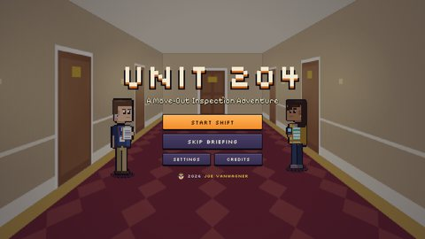
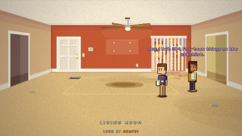
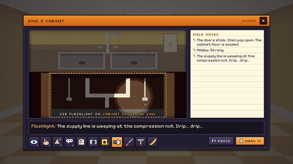
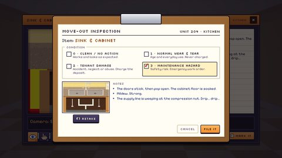
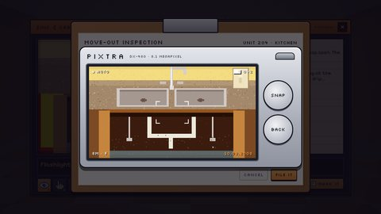
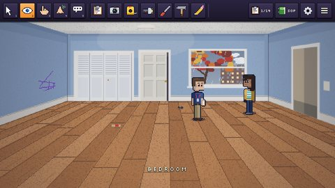
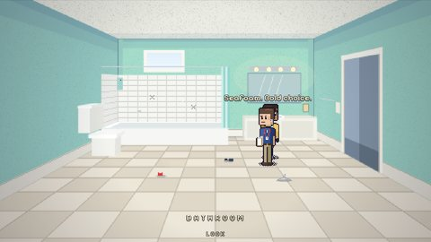
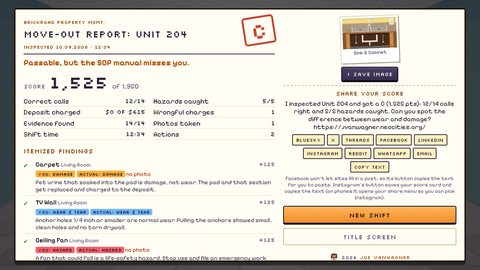

Learning game · A point-and-click move-out inspection · HTML / JavaScript / Canvas
Unit 204
A pixel-art point-and-click adventure about a move-out inspection: look, touch, smell and measure your way through an empty apartment, then mark every finding on your clipboard.
The hardest calls in a move-out inspection are the ones that decide money and safety. Is that worn carpet normal wear (never charged), tenant damage (charged, but only with a photo), or a maintenance hazard that needs a work order today? I built Unit 204 as a demo piece for a learning design role in property management. It makes you gather evidence before you decide, then grades every call with the reasoning from the standard operating procedure. You walk the unit with Dana from the leasing office, zoom into each feature, and use your senses and a toolbelt of 2008-vintage gear: tape measure, flashlight, screwdriver, hammer, pencil, and a silver point-and-shoot camera.
Controls: left-click to use the current verb or tool; right-click to cycle Walk, Look, Touch, Smell and Talk, like the Sierra adventure games of the '90s (or press 1–5, or C). Hover over the top edge for the toolbar of tools, the SOP manual and settings; Esc opens the menu. Best with a mouse, but it works on a phone or tablet too (tap the top edge for tools; a corner button cycles the cursor).
Tip: right-click inside the game to change your cursor. On a small screen, try the full-screen version.
Screenshots
















How it plays
- Fourteen features, four rooms. Carpet, a TV wall, a ceiling fan, the sink, the gas range, the countertop, the mirror and vanity light, the tub, the toilet, a GFCI outlet, the smoke detector, the closet doors, a window and a bedroom wall.
- Look closer. Looking at a feature zooms into a close-up. Touch, smell and use tools on its parts: measure a hole, tap tile with the hammer, pull an outlet cover with the screwdriver, get a light under the sink. Useful findings go into your field notes.
- Four calls. Use the clipboard to mark each feature Clean, Normal Wear & Tear, Tenant Damage or Maintenance Hazard. The SOP manual is a click away.
- Document it. Damage is only chargeable with a photo, and hazards always need one, so the camera is part of the job.
- Dana. Your assistant from the leasing office gives room hints and SOP refreshers (never the answer), and nudges you if you stall.
- A different unit every shift. Each feature gets one of its possible conditions at random, and the light (morning, afternoon, golden hour or rain), paint, floors and leftover junk change too.
- Feedback your way. Get graded right after each mark, or only in the final report (and change your mind until you submit).
- The report. Points for the right call, for finding real evidence, and for photos; a penalty for missing a hazard. Wrongful charges (billing a tenant for wear) are counted, and every item explains why.
What it trains
Like my other learning games, it's plain HTML and JavaScript that drops right into a course. Sound effects are by Kenney (CC0), and the pixel fonts are Pixelify Sans and Silkscreen (SIL Open Font License); everything else is drawn in code.